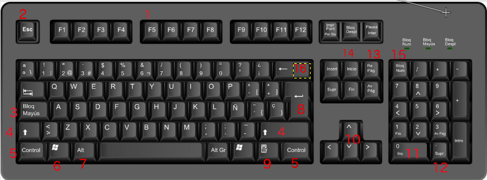
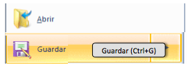
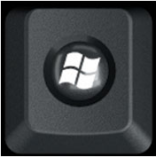
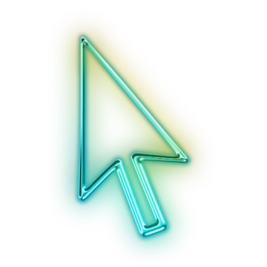
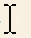

Lo principal antes de empezar a manejar un Sistema Operativo es conocer los distintos componentes que forman parte del ordenador o que están muy asociados a ellos. Aquí mostramos algunos.
El teclado

El teclado, permite introducir texto, así como instrucciones específicas a través de teclas especiales, como veremos enseguida.
1) Teclas de Función: Su uso depende de cada programa, aunque hay algunas convenciones establecidas respetadas por la mayoría de ellos. Por ejemplo, F1 activa el sistema de ayuda. F2 sirve para editar (modificar) algún elemento, F5 redibuja la pantalla, etcétera.
2) Esc (Escape): Cancela opciones no deseadas. Cierra menús, cuadros de diálogo, etcétera. En el trabajo cotidiano, suele convertirse en la primera opción natural cuando activamos una opción de modo incorrecto.
3) Bloq May (Bloque mayúsculas): Conmuta el teclado de minúsculas a mayúsculas y viceversa.
4) Mayús (Mayúsculas): Sirve para obtener mayúsculas y los símbolos que están arriba de los números, pero sin conmutar el teclado. Por tanto, debe presionar simultáneamente con la tecla deseada.
5) Ctrl (Control): Tiene diversos fines según el programa, pero siempre se utiliza en combinación con otras teclas.
6) Logo de Windows: Despliega el menú Inicio.
7) Alt: Su función primaria individual es activar el menú del programa que estemos utilizando. Sin embargo, suele utilizarse en combinación con otras teclas para múltiples funciones según el programa.
8) Enter: Se usa para introducir un dato a la computadora, aceptar una opción, indicar un fin de párrafo, etcétera.
9) Icono de menú: Activa el menú contextual. Equivale a pulsar el botón derecho del ratón.
10) Las flechas: Desplazan el cursor u otros elementos en la pantalla.
11) INS (Insert o Insertar): Permite la inserción de datos, texto u objetos en el punto donde se encuentre el cursor.
12) Supr (Suprimir): Borra los datos elegidos en pantalla.
13) RegPag y AvPag (Regresar Página y Avanzar Página): Desplazan los datos en pantalla según el programa..
14) Inicio: Desplaza el cursor al inicio de los datos, de una línea o de una página según el programa utilizado.
15) Bloq Num (Bloque numérico): Conmuta el teclado numérico entre los números y las opciones alternativas que cada tecla ofrece.
16) Retroceso: Borra el carácter que está a la izquierda del cursor.
- Combinar teclas: Para realizar algunas funciones hay que pulsar dos o más teclas a la vez. La nomenclatura general y que utilizaremos en el curso será tecla + tecla (por ejemplo: Ctrl + G). La forma de pulsar combinaciones es pulsar en primer lugar la tecla especial indicada primero, mantenerla pulsada y pulsar a continuación la segunda. Aunque normalmente las aplicaciones utilizan las mismas teclas rápidas, debemos tener en cuenta que pueden cambiar de una a otra. Guardar un documento por ejemplo puede hacerse con Ctrl + S o con Ctrl + G, en función de la aplicación que estemos usando (en inglés "save", en castellano "guardar"). A veces no podemos fiarnos de la intuición, ya que por ejemplo en Word se guarda con Ctrl + G (en castellano) y se imprime con Ctrl + P (del inglés, "print"). La forma de conocer las teclas rápidas es fijarse en los menús, frecuentemente la propia aplicación indica esta información, ya sea directamente o con la ayuda contextual que se muestra al pasar el cursor sobre una opción.

Teclas especiales: Algunas teclas contienen más de un signo, por ejemplo las numéricas de la parte superior. La forma de elegir un carácter u otro es combinar la pulsación de esa tecla con las teclas especiales Mayúsculas (también llamada Shift) y Alt Gr. También hay otras teclas especiales, como Alt, que se utiliza principalmente para combinaciones de teclas o la tecla de Windows  para acceder rápidamente al menú Inicio.
Ejemplo de Alt Gr y de Mayús: Veamos cómo elegir el carácter que queremos pulsar, vamos a fijarnos por ejemplo en la tecla del número 2:
- Si simplemente la pulsamos, obtendremos el número 2.
- Si pulsamos Alt Gr + 2 obtendremos la @.
- Si pulsamos Mayúsculas + 2 obtendremos ".
La tecla Alt nos puede resultar útil, por ejemplo, para desplegar el menú del programa que tengamos abierto. Al pulsarla se subraya una letra de cada opción del menú superior, por ejemplo la "A" del menú Archivo. Esto nos indica que pulsando Alt + A desplegamos el menú Archivo.
Otra tecla que también se suele utilizar es ESC. Sirve para cerrar algunas ventanas, programas o "escapar" en diferentes circunstancias, como cuando ha ocurrido un error en la aplicación en que estábamos trabajando. Su utilidad, como la del resto de teclas especiales, depende del programa con el que estemos usando, por lo que es una buena costumbre consultar la ayuda y documentación que ofrecen los mismos.
El Ratón
Los botones del ratón:
Hoy en día hay una gran variedad de ratones, con 2, 3, incluso hasta cuatro botones, pero las funciones básicas son las mismas.
El botón Izquierdo. Es el más utilizado porque con él seleccionaremos los objetos y pulsamos botones en pantalla.
El botón del medio o la rueda dentada se utiliza para desplazar hacia arriba o hacia abajo la pantalla. A veces, para que tenga efecto, tenemos que pinchar en el área donde nos queremos desplazar.
El botón derecho se utiliza para desplegar el menú contextual, este menú recibe este nombre porque en función del objeto seleccionado el menú contendrá unas opciones u otras, es decir, depende de su contexto.
Las funciones del ratón:
El clic. Se realiza con el botón izquierdo del ratón una pulsación sobre algún objeto, de esta forma seleccionamos el objeto con el que queremos trabajar (una ventana, un botón, un icono...).
Pinchar y arrastrar. Se utiliza para seleccionar varios objetos al mismo tiempo. Para hacerlo pinchas en una zona y arrastras hasta seleccionar los objetos deseados, luego suelta el botón. Normalmente las ventanas sólo se pueden arrastrar si nos situamos en la parte superior, es decir, en la barra de título.
Doble clic. Se utiliza para ejecutar una acción (abrir una carpeta, un documento, iniciar un programa a partir de su icono...).
Punteros del ratón:
Normal. El aspecto normal del puntero del ratón es una flecha , pero puede tomar estas otras formas.
Ocupado. Tiene la forma de un disco . El ordenador está procesando y no permite hacer ninguna otra operación hasta que no acabe la actual.
Texto. Cuando estamos en un lugar en el que es posible escribir texto toma esta forma. 
Punto de inserción. Tiene esta forma . No confundir con el puntero del ratón. El punto de inserción es el lugar donde se insertará la próxima letra que escribamos. El punto de inserción se va desplazando solo según vamos introduciendo texto, pero también se puede desplazar con las teclas de las flechas del teclado, y también al hacer clic con el ratón se coloca en la posición donde esté el puntero. Mantiene un constante parpadeo que nos facilita su localización.